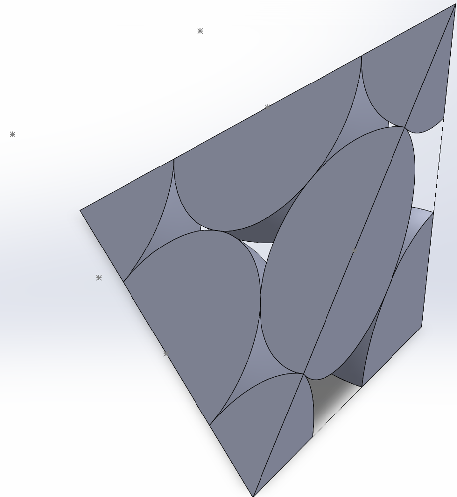
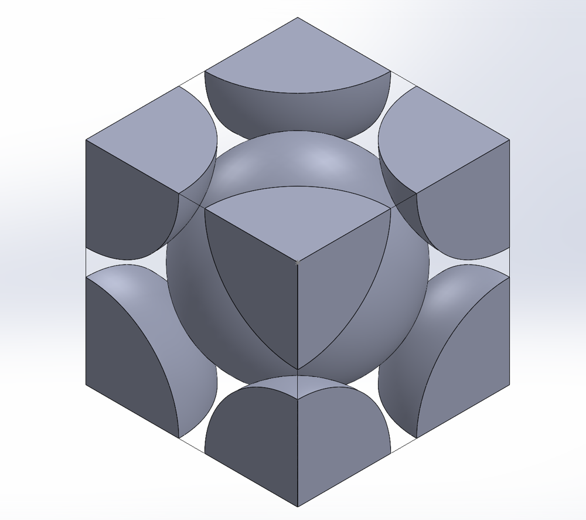
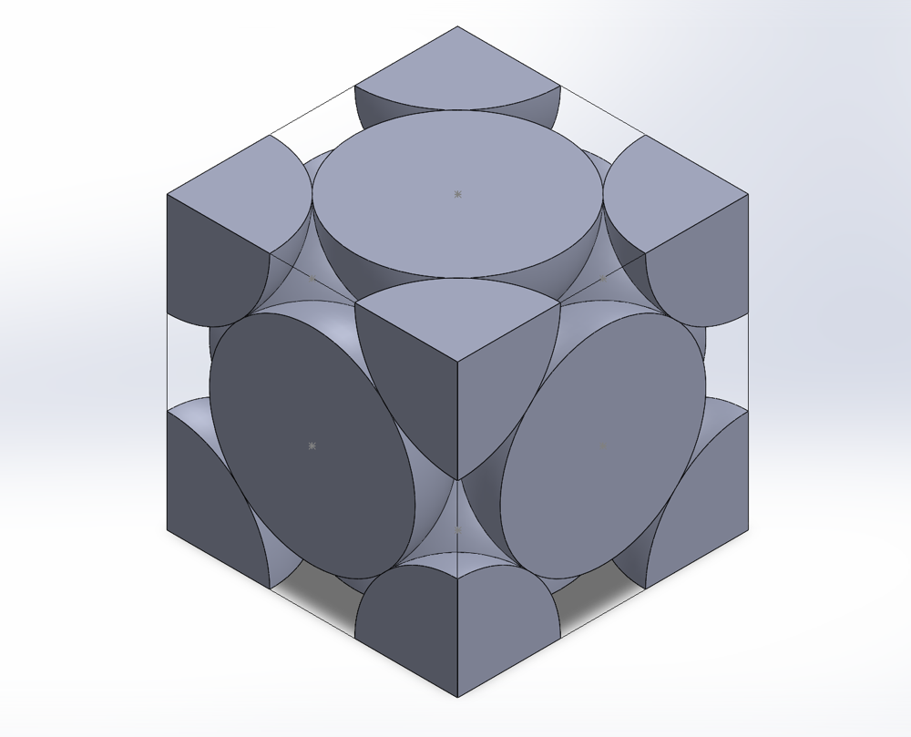
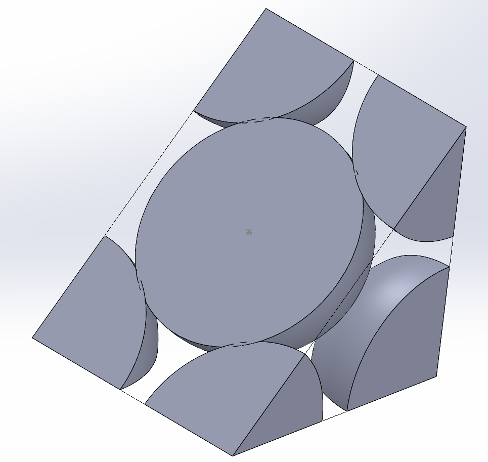

Materials Science and Mechanical Testing Labs
- Dates
- Jan 2025 – Apr 2025
- Context
- Materials Science lab (ME 2341, Section 08), Northeastern University
- Role
- Group leader of a five-person lab group; the SolidWorks crystal-structure lab was my individual report
- Tools
- SolidWorks · X-ray diffraction (Bragg's law, ICDD matching) · bright-field optical microscopy · SEM-EDS · ImageJ · Rockwell hardness (HRB) · Charpy impact tester · metallographic grinding and polishing · Excel
Led a five-person lab group through metallography and mechanical testing: we quantified the phases in brass by image analysis, compared quenched and furnace-cooled steel, and measured Delrin spherulites about 29% larger after isothermal cooling. Before that, I modeled iron's BCC and FCC crystal structures in SolidWorks.
Key numbers
- Zinc in the brass
- 39.92 wt%
- α phase in the brass
- 46.95 wt%
- Spherulites, isothermal vs. natural
- 120.5 vs. 93.6 µm
- Packing factor, BCC / FCC
- 0.68 / 0.74
- Lab-supplied 4142 steel
- 1000 °C, 1 h




Objective
Link structure to properties: model iron's unit cells, relate the microstructures of brass, 4142 steel, and Delrin to their phases and cooling histories, and measure hardness and impact toughness. The course ran three labs: crystal structures in SolidWorks, metallography and polymer crystallization, and hardness and impact testing.
What I did
Lab 1: Crystal structures in SolidWorks (individual)
- Modeled body-centered cubic (BCC) and face-centered cubic (FCC) iron unit cells as SolidWorks assemblies of atom parts, with the atomic radius scaled to r = 1.26 in.
- Calculated the lattice parameters: a = 4r/√3 ≈ 2.91 in for BCC and a = 4r/√2 ≈ 3.56 in for FCC.
- Cut the close-packed planes through each model: {110} for BCC and {111} for FCC.
- Calculated atomic packing factors of 0.68 for BCC and 0.74 for FCC.
- Placed tetrahedral and octahedral interstitial atoms in both structures.
- Exported both unit cells as STL files.
- Identified two unknown samples from their XRD patterns (λ = 1.54 Å) using Bragg's law and the ICDD reference data: sample 1 as aluminum (FCC, a ≈ 4.05 Å) and sample 2 as iron (BCC, a ≈ 2.87 Å).
Lab 2: Metallography and polymer crystallization (group leader)
- As group leader, took responsibility for what work was produced and submitted in the final reports, including pictures, diagrams, graphs and calculations.
- Ground the brass through 240-, 320-, 400-, and 600-grit silicon-carbide paper, rotating 90° between grits, then polished it with 1.0 µm and 0.5 µm alumina to a mirror finish.
- Etched the brass with ferric chloride (FeCl₃ in ethanol and HCl), which darkens the zinc-rich β phase.
- Examined the brass with SEM-EDS.
- Measured the brass phase area fractions in ImageJ across four samples, calculated each phase's density from its crystal structure, lattice parameter, and composition, and converted the area fractions to weight fractions and the overall alloy composition.
- Analyzed micrographs of 4142 steel (0.40–0.45 wt% C) heat-treated at 1000°C for 1 hour, water-quenched vs. furnace-cooled; the lab supplied the samples and micrographs.
- Measured four spherulites from each run of the lab's Delrin (polyoxymethylene) hot-stage video demonstration: the film was heated to 200°C at 50°C/min and held for 120 s, then cooled naturally (non-isothermal) or held at 156°C for 600 s (isothermal), under a polarized-light microscope at 20×.
Lab 3: Hardness and impact testing
- Tested brass (Cu-Zn), an aluminum alloy, cold-rolled steel, and hot-rolled steel.
- Measured Rockwell B hardness (HRB): six indents per specimen, three on each of two adjacent sides, spaced three to five indentation diameters apart, with the average and standard deviation calculated in Excel.
- Ran Charpy impact tests on notched specimens (2 mm notch) at three temperatures: about −200°C (cooled in liquid nitrogen), room temperature (about 25°C), and 200°C (heated in an oven). Recorded fracture energy from the dial and the computer, and photographed the fracture surfaces.
- The class pooled its data to recommend materials for a framing nail and a knife blade.
Results
- Brass: the ImageJ area fractions across four samples averaged 45.0% α and 55.0% β. Using calculated phase densities of 8.63 g/cm³ (α) and 7.99 g/cm³ (β), that gives 46.95 wt% α and 53.05 wt% β, an overall composition of 39.92 wt% zinc and 60.08 wt% copper, and a density of 8.28 g/cm³.
- Steel: water-quenching froze the high-temperature structure into a needle-shaped, non-equilibrium microstructure: strong and hard but brittle, suited to cutting tools. Furnace cooling allowed diffusion and produced a layered, equilibrium microstructure: tougher, with intermediate strength and hardness.
- Delrin: isothermal cooling at 156°C grew spherulites averaging 120.5 µm, against 93.6 µm for natural cooling (four crystals measured in each run). That makes the isothermal spherulites about 29% larger.
What I'd do differently
Rinse the sample between grits, sand longer at each step, and use a gentler etch. Leftover scratches and over-etching blurred the brass phase boundaries, which made the ImageJ measurement less precise. Sharper spherulite images would also make the diameters easier to measure.
Gallery






